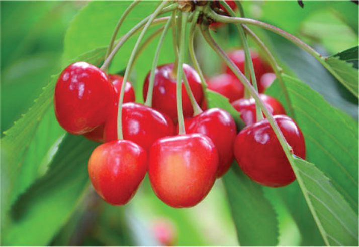

- Trang chủ
- Natu C
- Thông tin sản phẩm
- NHẬN BIẾT BAO BÌ
- Hướng dẫn sử dụng
VITAMIN C TỰ NHIÊN C NATTU
Sức khoẻ và sự phát triển trí não trong những năm đầu đời là nền tảng cho sự phát triển toàn diện của trẻ. Ở giai đoạn này các cơ quan trong cơ thể phát triển rất nhanh về cấu trúc và chức năng, trẻ cần một chế độ chăm sóc và hỗ trợ dinh dưỡng kịp thời. Vì vậy, đây là cơ hội tốt để bổ sung những dưỡng chất cần thiết nhằm tăng cường khả năng phát triển, đảm bảo một tương lai tương sáng cho trẻ. Cốm vi sinh Bio-acimin Gold với thành phần gồm hàng triệu vi khuẩn có lợi, cùng vitamin, acid amin và các khoáng chất thiết yếu cho đường ruột khỏe mạnh, giúp giải quyết hiệu quả tình trạng rối loạn tiêu hóa và kích thích trẻ ăn ngon một cách tự nhiên. Kết quả Nghiên cứu lâm sàng cho thấy cốm vi sinh Bio-acimin Gold giúp:
Sức khoẻ và sự phát triển trí não trong những năm đầu đời là nền tảng cho sự phát triển toàn diện của trẻ. Ở giai đoạn này các cơ quan trong cơ thể phát triển rất nhanh về cấu trúc và chức năng, trẻ cần một chế độ chăm sóc và hỗ trợ dinh dưỡng kịp thời. Vì vậy, đây là cơ hội tốt để bổ sung những dưỡng chất cần thiết nhằm tăng cường khả năng phát triển, đảm bảo một tương lai tương sáng cho trẻ. Cốm vi sinh Bio-acimin Gold với thành phần gồm hàng triệu vi khuẩn có lợi, cùng vitamin, acid amin và các khoáng chất thiết yếu cho đường ruột khỏe mạnh, giúp giải quyết hiệu quả tình trạng rối loạn tiêu hóa và kích thích trẻ ăn ngon một cách tự nhiên. Kết quả Nghiên cứu lâm sàng cho thấy cốm vi sinh Bio-acimin Gold giúp:

Sức khoẻ và sự phát triển trí não trong những năm đầu đời là nền tảng cho sự phát triển toàn diện của trẻ. Ở giai đoạn này các cơ quan trong cơ thể phát triển rất nhanh về cấu trúc và chức năng, trẻ cần một chế độ chăm sóc và hỗ trợ dinh dưỡng kịp thời. Vì vậy, đây là cơ hội tốt để bổ sung những dưỡng chất cần thiết nhằm tăng cường khả năng phát triển, đảm bảo một tương lai tương sáng cho trẻ. Cốm vi sinh Bio-acimin Gold với thành phần gồm hàng triệu vi khuẩn có lợi, cùng vitamin, acid amin và các khoáng chất thiết yếu cho đường ruột khỏe mạnh, giúp giải quyết hiệu quả tình trạng rối loạn tiêu hóa và kích thích trẻ ăn ngon một cách tự nhiên. Kết quả Nghiên cứu lâm sàng cho thấy cốm vi sinh Bio-acimin Gold giúp:
Tại sao chọn Lycoskin
Thành phần kali, magiê, vitamin B6, B12, và C dồi dào trong chuối có tác dụng hoàn hảo cho làn da bạn. Nó được coi là công thức dưỡng trắng da, tăng độ mềm mại và còn giúp giảm một lượng đáng kể nám trên da bạn. Hai công thức sau đây sẽ khiến làn da bạn được cải thiện nhanh hơn:
Chuối + mật ong + sữa chua: Trộn 1 quả chuối chín với 1 hộp sữa chua và thêm 2 thìa mật ong, sau đó đắp lên mặt khoảng 15 phút và rửa mặt với nước lạnh. Công thức này phù hợp với mọi loại da khiến da mềm mịn, dịu nhẹ và chống lão hóa hiệu quả cho làn da của bạn.

Tin mới nhất

Tôi được Dược sỹ tư vấn dùng Imunoglukan P4H® cho cháu 20 tháng tuổi để phòng ngừa cảm cúm.
11/01/2016 203 lượt xem
Tôi được Dược sỹ tư vấn dùng Imunoglukan P4H® cho cháu 20 tháng
11/01/2016 203 lượt xem
Tôi được Dược sỹ tư vấn dùng Imunoglukan P4H® cho cháu 20
11/01/2016 203 lượt xem
Tôi được Dược sỹ tư vấn dùng Imunoglukan P4H® cho cháu 20 tháng tuổi để phòng ngừa cảm cúm.
11/01/2016 203 lượt xem
Tôi được Dược sỹ tư vấn dùng Imunoglukan P4H® cho cháu 20 tháng
11/01/2016 203 lượt xem
Tôi được Dược sỹ tư vấn dùng Imunoglukan P4H® cho cháu 20
11/01/2016 203 lượt xem